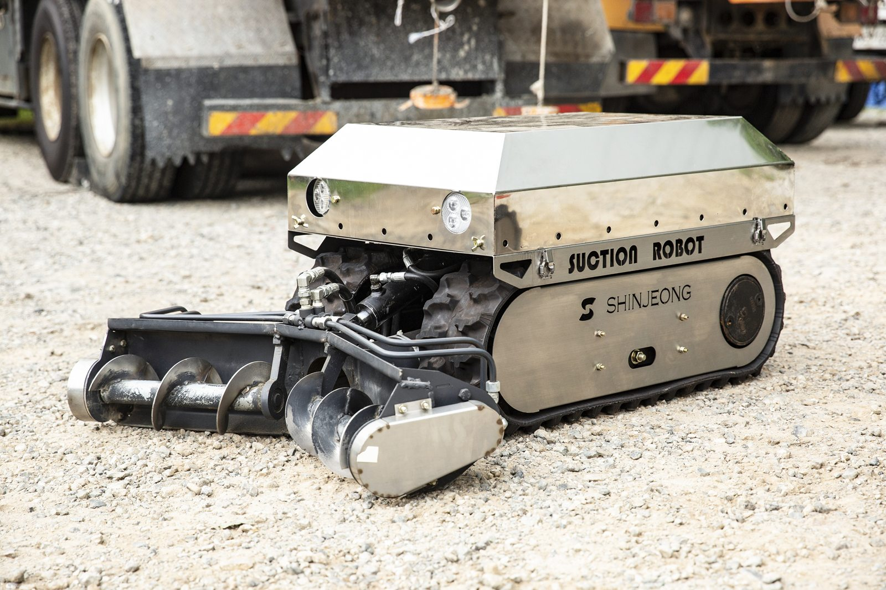
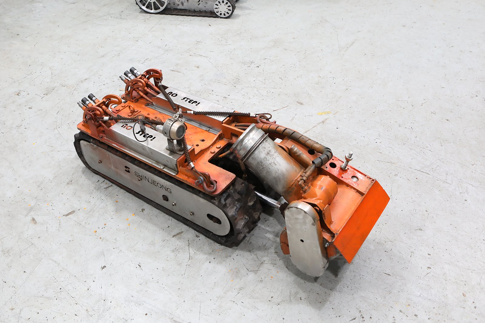
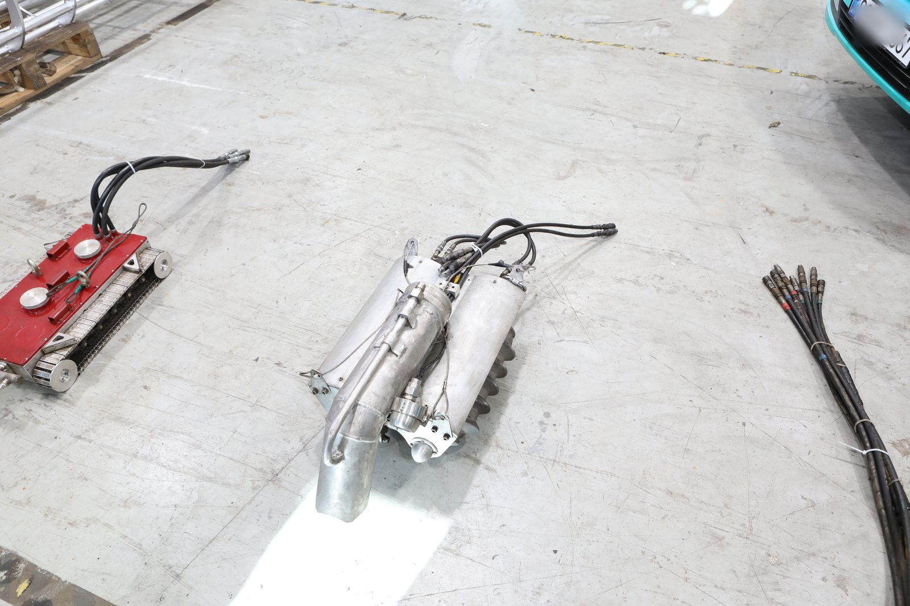
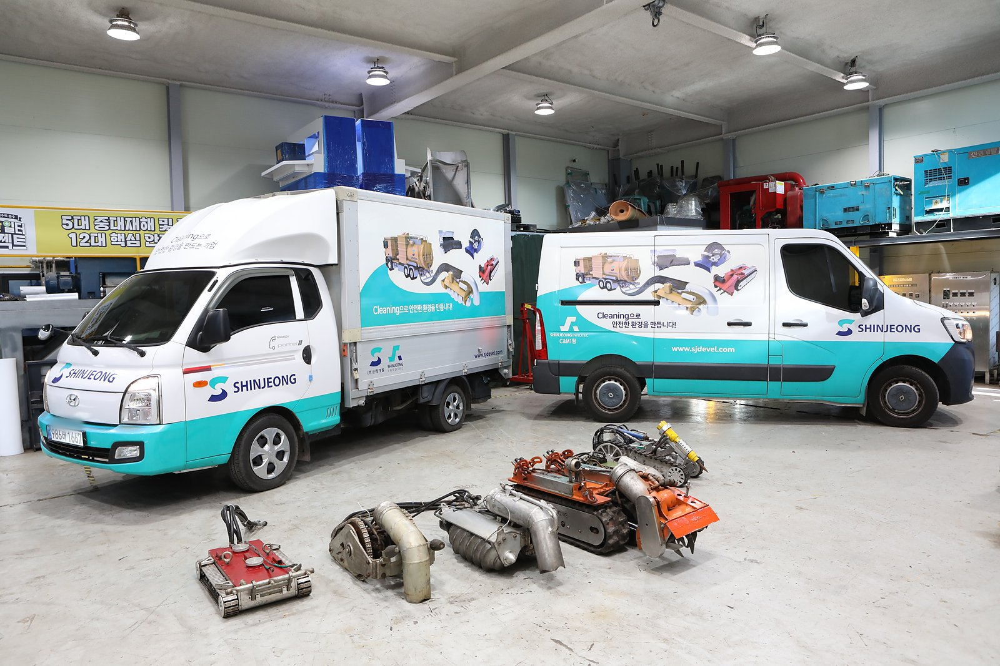

BUSINESS 02 · EQUIPMENT CLEANING · CATALYST
촉매·충진물 작업
반응기와 관련 설비의 촉매·충진물 제거 및 교체 작업.
OVERVIEW
반응기 안의 촉매·충진물을 로봇으로 꺼내고 교체합니다.
Reactor·Tank 내부의 촉매·충진물을 제거하고 교체합니다. 질소 분위기와 방폭 지역 조건에 맞춘 장비를 운용하고, 흡입·분리·원격 모니터링 시스템을 함께 구성합니다.
대상 설비·업무
- 촉매 제거·교체
- 충진물 제거·교체
- 하역·충진 관련 작업의 범위 상담

EQUIPMENT
장비의 외형
전면 스크루와 궤도를 갖춘 장비의 외형입니다.
CONCEPT
작업 시스템의 역할
촉매·충진물 작업에서 살펴보는 시스템의 역할을 개념으로 정리했습니다.
흡입
촉매·충진물을 호스로 흡입해 회수하는 역할
분리
회수한 물질을 작업에 맞게 분리하는 역할
원격 모니터링
설비 밖에서 작업 상황을 확인하는 역할
EQUIPMENT & FIELD
장비와 현장
회사소개서의 촉매 처리 작업 구성(Robot · Vacuum Car · Separator · Control Car)에 쓰이는 장비의 외형과 차량 구성입니다.



촉매·충진물 작업,
어디까지 가능한지 물어보세요.
설비 종류 · 충진물 특성 · 요청 범위 · 희망 일정 등을 알려 주시면 가능한 작업 범위와 진행 방법을 안내해 드립니다.